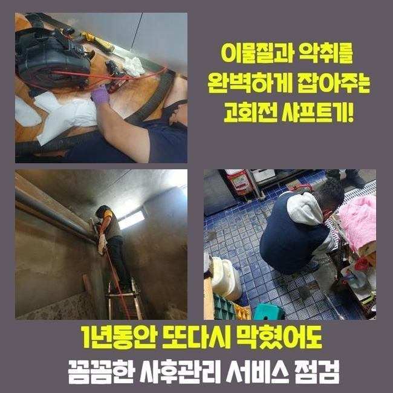
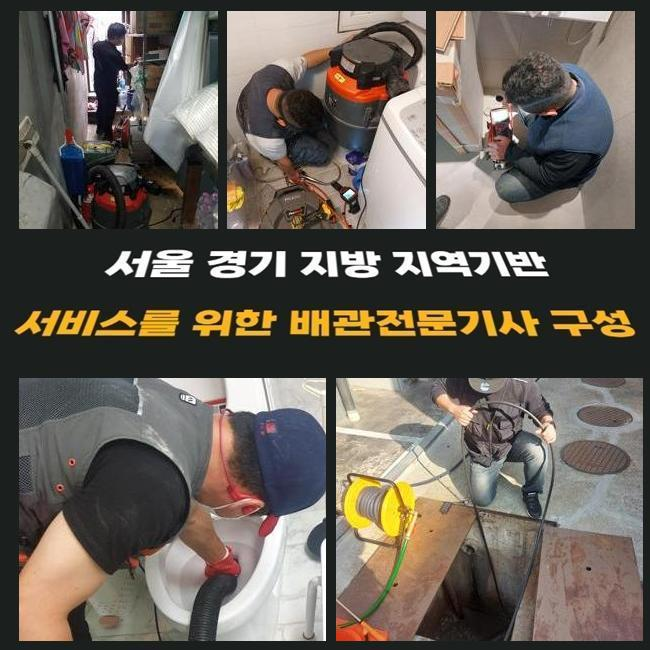
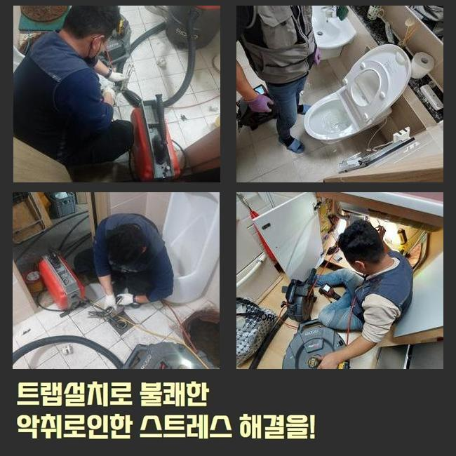
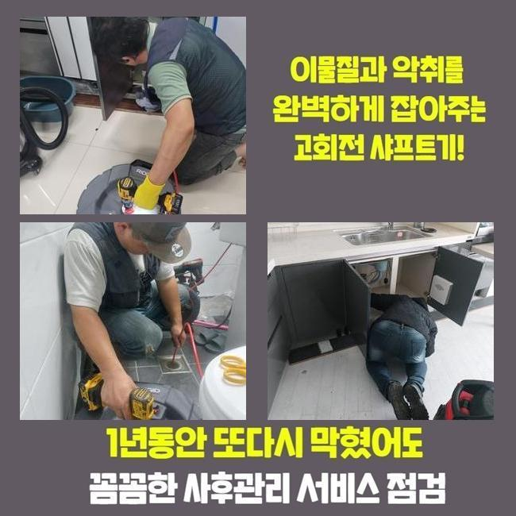
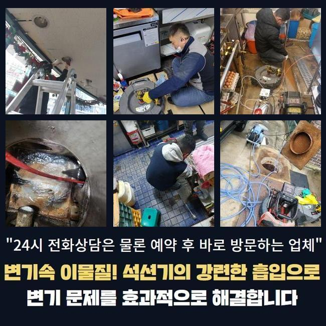
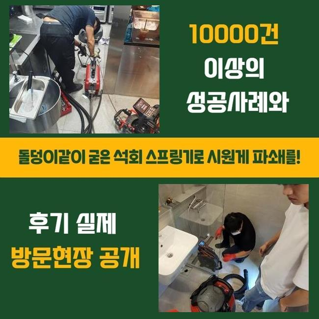
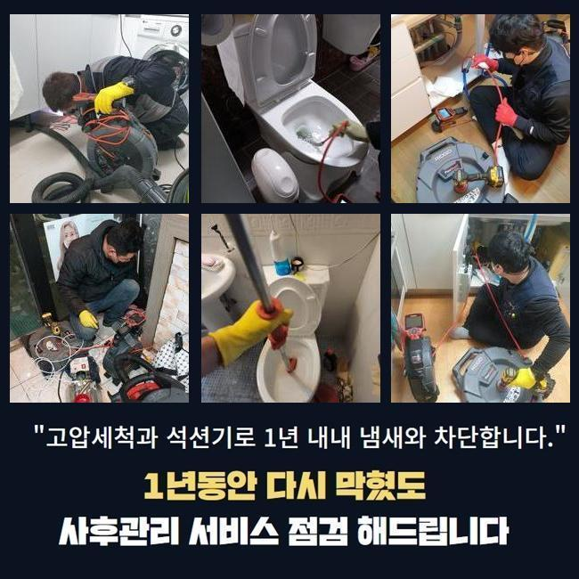

🏠 용인 신봉동씽크대역류 동천동 하수구뚫는곳 설비출장
용인 신봉동 싱크대막힘 전문 시공 후기

📋 작업 개요
- 위치: 용인 신봉동, 신봉동, 용인
- 서비스 유형: 싱크대막힘, 변기막힘, 하수구막힘, 배관막힘, 집수정막힘, 역류해결, 뚫는업체, 배관청소, 설비공사
- 작업 일시: 2025. 2. 23. 17:56
- 업체명: 하수구수사대 (010-5615-2118)
🔍 문제 상황
용인 신봉동씽크대역류 동천동 하수구뚫는곳 설비출장
공동 주택의 배수구를 관리하지 않는 경우 노폐물이 층을 이루면서 하수시설의 고장이 발견될 확률이 높아요
이러한 이유로 연식이 오래 되신 경우엔 정기적으로 하수구의 상태를 미리 파악하는게 안전합니다
어제 저녁에 사례자님께서 배수관이 막혀서 문제가 생겼다고 문의를 해주셨습니다
긴급하게 출동을 해서 살펴보니 마을과는 떨어져서 외딴곳의 연립주택으로 주변에는 캠핑업체가 영업을 하고있는 상태였어요
건물을 올린지 몇 년 되지도 않았는데 외부로 역류문제가 자주 보인다고 하셨어요
체크해봤더니 창고 안쪽으로 설치되어 있는 집수정이 외부에 있는 정화조로 흘러가는 상황이였어요
정화조 거리가 너무 멀어서 이곳에 설치 하셨다고 말씀하셨어요
고객분께 막혀있는 지점들을 찾는다해도 중간 점검구가 없는 경우엔 장시간 작업을 해야한다고 설명 해드렸더니 동의를 해주셨습니다
집수정쪽에서 내시경장비를 넣었으나 오염물질이 가득하게 차있었기 때문에 안쪽으로 카메라가 들어가지 못했어요

🔎 원인 분석
💡 전문가 진단: 정밀 진단 장비를 사용하여 슬러지의 고착 여부를 판명하고 타격/세척 작업을 실시했습니다.
이물질이 가득 차있는 모습을 의뢰인에게도 보여드리며 설명 해드렸어요
샤프트장치로 수리를 진행했습니다
기기에 물티슈를 비롯한 머리카락들이 계속해서 걸려나왔어요
다세대주택의 막힘사고의 원인들은 머리카락과 물티슈가 흔합니다
사례자님께 물티슈와 머리카락은 거름망을 통해 버리시라고 말씀 드렸어요
물티슈같은 것은 화학적인 성분으로 일반 휴지처럼 종이가 아니라 플라스틱 성질이므로 물과 만나도 녹지 않는 특징을 가지고 있습니다
최근 변기에 버려도 된다고 광고하는 물티슈도 있지만 한번에 많이 사용하시면 배수구가 막히면서 역류현상이 나타날 수 있습니다
배수관 속에 있었던 불순물과 같이 큰덩어리로 변하면서 막혀버리겠죠
하수시설을 이용하실땐 물티슈와 작은 쓰레기 등은 분리하여 버리셔야 해요
배수관은 하수만을 다루는 시설인 것을 기억하시고 작은 쓰레기라도 분리 해주세요

🔧 작업 과정
이후엔 창고쪽으로 가서 내시경 작업들을 마저합니다
배수라인이 길게 매립되어 있어 내시경기기계가 끝쪽까지 들어가는게 부담돼서 쏜드를 이용했어요
막힌 부분쪽에 계속해서 침전물 제거를 진행했어요
집수정과 동일하게 머리카락 외에도 물티슈가 계속해서 올라오는걸 보시고 의뢰인분께서도 작은 일이 아니라는 것을 인지하셨다고 하셨어요
저희 전문진에게 이와같은 막힘사고가 발생하지 않을 수 있는 사용법을 자세히 문의하셔서 안내 해드렸어요
보통 사용하시면서 작은 쓰레기 같은건 흘러갈 것이라고 생각하시겠지만 배관의 경사도에 따라서 안쪽에 불순물도 생기기때문에 녹지 않는 물티슈와 음식에서 나오는 기름을 버리시면 안돼요
내시경기를 투입해서 오염물질이 깨끗하게 나왔는지 체크했어요
정화조에서 시작하여 집수정까지 모두 체크했고 찌꺼기 하나 없이 깔끔한 배관이 보였습니다
고객님께도 보여드렸더니 만족해하셨습니다
보통 강한 산성의 약제를 이용하면 쉽게 막힌부분을 뚫어낸다고 생각하는 경우도 있었지만 추천드리는 방법은 아닙니다
고객분께서 이용하실때 찌꺼기를 흘려보내지 말고 다세대주택의 사용년수가 오래 되셨다면 전문 업체에게 맡겨 예방검진을 진행하시는게 좋습니다
그냥 방치하시면 역류사태까지 진행되며 큰공사를 진행하게 되어 비용적인 부담이 커지게 됩니다
어떤일도 마차가지로 하수설비의 이상을 작은 문제로 여기시면 경제적으로 고객님에세 부담되는 부분이 증가하다는걸 잊지말고 미리 예방하셔야 해요
모든 작업을 종료하고 최종적으로 점검하며 청소를 진행했습니다
오래된 이물질들로 심한 악취가 발생해서 전용세제를 뿌려두고 직접 호스를 끌고와서 대청소까지 완료했습니다
기본적으로 이러한 오염물질까지 저희 전문 기술진이 대청소하는 경우는 많지 않아요


✅ 작업 완료
이번에 작업한 현장은 오염이 너무 심한 편이라서 저희도 그냥 지나칠 수가 없었습니다
저희는 하수라인의 물티슈등은 당연하고 하수관의 불순물을 꺼내고 정상적인 통수가 잘 나오는 것까지 최종점검을 꼭 진행해요
의뢰인께서 저희 전문가를 신뢰하고 맡기실 수 있도록 최선을 다할 것이며 비슷한 문제로 자세한 사항을 알고 싶으신 경우라면 언제든 전화주세요
하수관 막힘문제를 조금 더 나은 방법으로 처리하시려면 신속정확함이 베스트라는 것을 잊지말고 미리 예방하셔야 해요
고객분들께 이러한 하수설비의 이상문제가 발생하지 않기를 바라지만 발생했다면 조속히 전문적인 업체에 연락시는게 좋아요




⚠️ 주방 싱크대 배관 막힘 예방 수칙
- ✅ 기름기가 묻은 식기나 프라이팬은 설거지 전 키친타올로 반드시 기름때를 닦아내세요.
- ✅ 주기적으로 싱크대 개수대에 뜨거운 물을 가득 받아 한 번에 내려 배관 내부 기름을 씻어내세요.
- ✅ 배수구 거름망을 미세한 필터로 사용하시고 음식물 찌꺼기가 틈으로 새어 들지 않게 관리하세요.
- ✅ 베이킹소다와 식초를 뜨거운 물과 함께 일주일에 한 번씩 부어주면 배관 살균과 막힘 예방에 좋습니다.
💡 핵심 정리
- 확실한 장비 작업(내시경 점검 및 샤프트 스케일링)으로 원인을 뿌리 뽑습니다.
- 작업 후 1년 이내에 동일한 부위 재발 시 100% 무상 A/S 서비스를 보장합니다.
- 서울 · 경기 · 인천 전 지역에 24시간 언제든 긴급 출동할 수 있도록 항시 대기 중입니다.
❓ 자주 묻는 질문 (FAQ)
🚨 용인 신봉동 싱크대막힘 문제로 고민이신가요?
정확한 원인 진단과 확실한 시공으로 재발 없는 해결을 약속드립니다.
24시간 긴급 출동 | 서울 · 경기 · 인천 전지역 | 1년 내 재발 시 무상 A/S